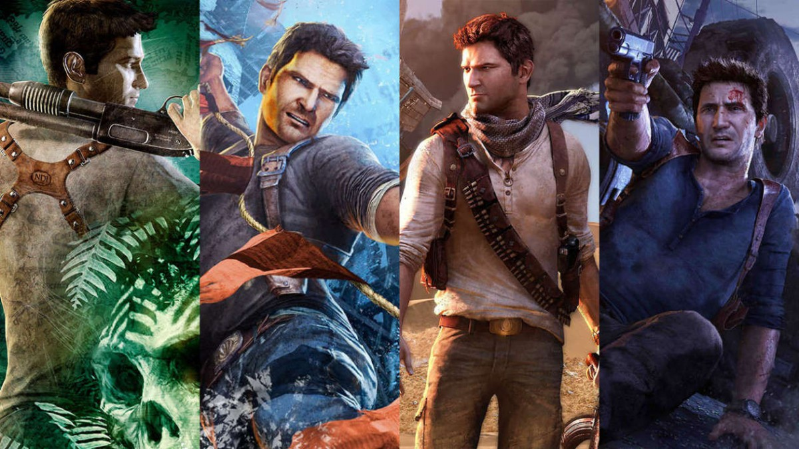
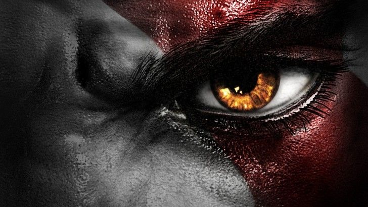
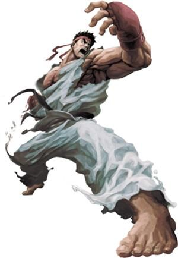

J'ai commencé avec la Super Nintendo et mon tout premier jeu fût Mario

Par la suite, je me suis tourné vers les consoles PlayStation en commençant avec la PS1 et au fil des années j'ai acquis ses petites soeurs: la PS2, PS3 et PS4.
La ludothéque des jeux Sony est extrêmement diversifiée avec des licences fortes pour chaque type de joueurs.
 
J'adore me plonger dans des jeux dans lesquels la narration prend une part importante et ou les choix du joueur impactent la tournure de l'histoire.
Comme par exemple, les jeux du studio français Quantic Dream et également le jeu Life is Strange.
J'ai également un faible pour les jeux de combats, j'adore la sensation de satisfaction que l'on ressent après avoir passer des heures à s'entrainer avec un personnage.
